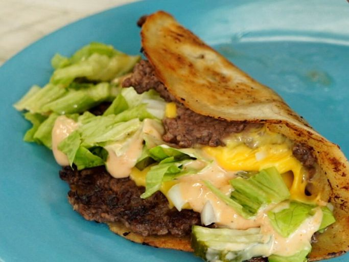

Burger Taco
If you're a smash burger fan, try serving them as a taco with cheese and all the fixings for a different take!
Ingredients
1/4 cup mayonnaise
1 tablespoon ketchup
1 teaspoon mustard
1 tablespoon relish
1/2 teaspoon hot sauce
1 lb ground round
1 teaspoon Kosher salt
1/2 teaspoon freshly ground black pepper
4 (6-inch) flour tortillas
2 slices American cheese, cut in half lengthwise
1 cup shredded iceberg lettuce
1/4 cup diced onion
Step-by-step
- Combine mayo, ketchup, mustard, relish, and hot sauce in a small bowl; set sauce aside.
- Heat a griddle over medium-high heat.
- Divide beef into 4 loose portions and place them in mounds on the hot griddle. Season evenly with salt and pepper and cook for 2 minutes. Place a tortilla on top of each beef portion and press down to flatten the beef into the shape and size of the tortilla.
- Cook until tortilla is golden-brown, 2 to 3 more minutes. Flip each patty over and top with cheese. When cheese has melted and the tortilla has lightly browned, top with lettuce and onions. Drizzle with sauce, remove from the griddle and fold in half like a taco. Serve immediately.